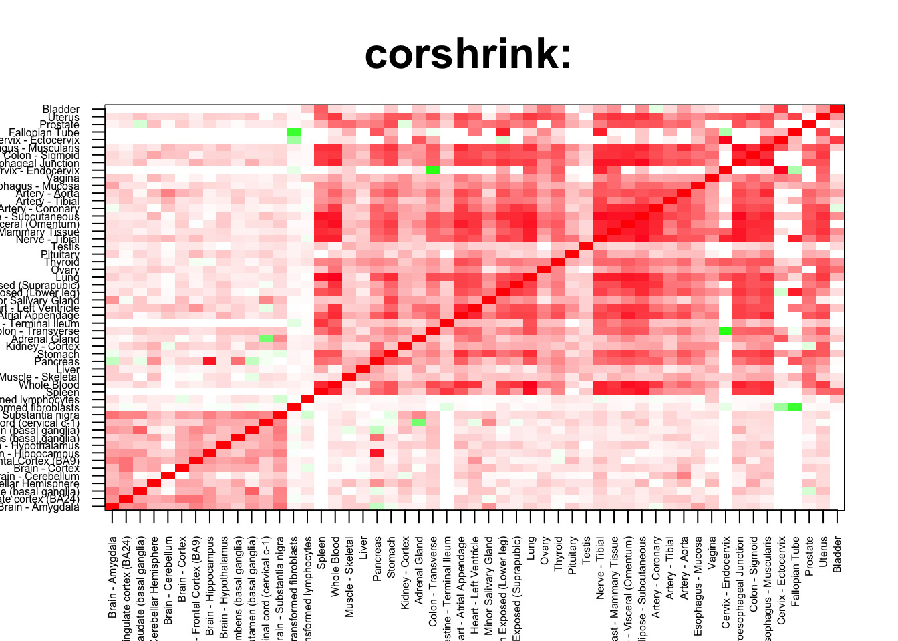
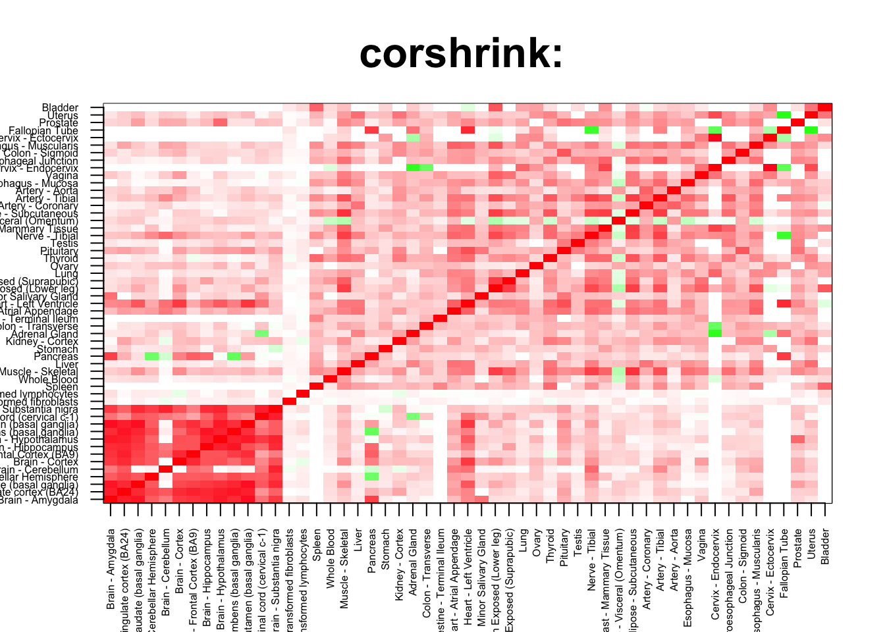
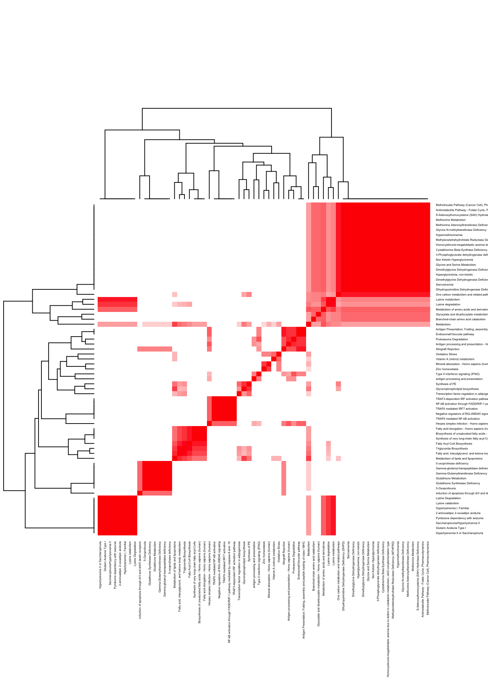
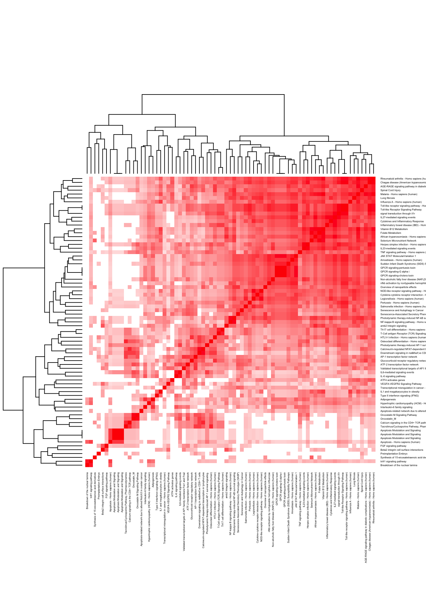

rm(list=ls())
corshrink_data <- get(load("../output/genewide_ash_out_tissue_mat.rda"))
cor_data <- get(load("../output/cor_tissues_non_ash_voom_pearson.rda"))common_samples <- get(load("../output/common_samples.rda"))
tissue_labels <- read.table(file = "../data/GTEX_V6/samples_id.txt")[,3]
#library(data.table)
#data <- data.frame(fread("../data/GTEX_V6/cis_gene_expression.txt"))
#matdata <- t(data[,-c(1,2)])
gene_names <- as.character(read.table(file = "../data/GTEX_V6/gene_names_GTEX_V6.txt")[,1])
gene_names_1 <- as.character(sapply(gene_names, function(x) return(strsplit(x, "[.]")[[1]][1])))
U <- unique(tissue_labels)tab <- array(0, dim(corshrink_data)[3])
breast_adipose_2_set <- match(c("Adipose - Subcutaneous", "Adipose - Visceral (Omentum)",
"Breast - Mammary Tissue"), U)
for(m in 1:dim(corshrink_data)[3]){
temp <- corshrink_data[breast_adipose_2_set, breast_adipose_2_set, m]
temp1 <- corshrink_data[order_index[-(1:13)], order_index[-(1:13)],m]
tab[m] <- median(temp[row(temp) > col(temp)]) - median(temp1[row(temp1) > col(temp1)])
}
ordering_high <- order(tab, decreasing = TRUE)[1:100]
ordering_low <- order(tab, decreasing = FALSE)[1:100]top_gene <- gene_names_1[ordering_high[1]]
col=c(rev(rgb(seq(1,0,length=1000),1,seq(1,0,length=1000))),
rgb(1,seq(1,0,length=1000),seq(1,0,length=1000)))
image(as.matrix(corshrink_data[order_index,order_index, ordering_high[1]]),
col=col, main=paste0("corshrink: "), cex.main=2,
xaxt = "n", yaxt = "n", zlim=c(-1,1))
axis(1, at = seq(0, 1, length.out = 53), labels = U[order_index], las=2, cex.axis = 0.5)
axis(2, at = seq(0, 1, length.out = 53), labels = U[order_index], las=2, cex.axis = 0.5)
bottom_gene <- gene_names_1[ordering_low[1]]
col=c(rev(rgb(seq(1,0,length=1000),1,seq(1,0,length=1000))),
rgb(1,seq(1,0,length=1000),seq(1,0,length=1000)))
image(as.matrix(corshrink_data[order_index,order_index, ordering_low[1]]),
col=col, main=paste0("corshrink: "), cex.main=2,
xaxt = "n", yaxt = "n", zlim=c(-1,1))
axis(1, at = seq(0, 1, length.out = 53), labels = U[order_index], las=2, cex.axis = 0.5)
axis(2, at = seq(0, 1, length.out = 53), labels = U[order_index], las=2, cex.axis = 0.5)
high_breast_adipose_2_genes <- gene_names_1[ordering_high]
low_breast_adipose_2_genes <- gene_names_1[ordering_low]
write.table(cbind.data.frame(high_breast_adipose_2_genes), quote = FALSE, file = "../utilities/breast_adipose_2/high_breast_adipose_2.txt", row.names = FALSE, col.names = FALSE)
write.table(cbind.data.frame(low_breast_adipose_2_genes), quote = FALSE, file = "../utilities/breast_adipose_2/low_breast_adipose_2.txt", row.names = FALSE, col.names = FALSE)tab <- read.delim("../utilities/breast_adipose_2/pathway_high.tab")
head(cbind.data.frame(tab$pathway, tab$q.value), 100)## tab$pathway
## 1 Lysine degradation
## 2 Herpes simplex infection - Homo sapiens (human)
## 3 Proteasome Degradation
## 4 Antigen processing and presentation - Homo sapiens (human)
## 5 Metabolism
## 6 Triglyceride Biosynthesis
## 7 Type II interferon signaling (IFNG)
## 8 Zinc homeostasis
## 9 Fatty acid, triacylglycerol, and ketone body metabolism
## 10 Metabolism of amino acids and derivatives
## 11 Gamma-glutamyl-transpeptidase deficiency
## 12 5-oxoprolinase deficiency
## 13 Gamma-Glutamyltransferase Deficiency
## 14 Glutathione Metabolism
## 15 Glutathione Synthetase Deficiency
## 16 5-Oxoprolinuria
## 17 antigen processing and presentation
## 18 Lysine catabolism
## 19 NF-kB activation through FADD/RIP-1 pathway mediated by caspase-8 and -10
## 20 Antimetabolite Pathway - Folate Cycle, Pharmacodynamics
## 21 Endosomal/Vacuolar pathway
## 22 Lysine Degradation
## 23 Hyperlysinemia I, Familial
## 24 2-aminoadipic 2-oxoadipic aciduria
## 25 Pyridoxine dependency with seizures
## 26 Saccharopinuria/Hyperlysinemia II
## 27 Glutaric Aciduria Type I
## 28 Hyperlysinemia II or Saccharopinuria
## 29 Synthesis of PE
## 30 One carbon metabolism and related pathways
## 31 TRAF3-dependent IRF activation pathway
## 32 Mineral absorption - Homo sapiens (human)
## 33 Fatty Acyl-CoA Biosynthesis
## 34 Methotrexate Pathway (Cancer Cell), Pharmacodynamics
## 35 Lysine metabolism
## 36 TRAF6 mediated IRF7 activation
## 37 Glycerophospholipid biosynthesis
## 38 S-Adenosylhomocysteine (SAH) Hydrolase Deficiency
## 39 Methionine Metabolism
## 40 Methionine Adenosyltransferase Deficiency
## 41 Glycine N-methyltransferase Deficiency
## 42 Hypermethioninemia
## 43 Methylenetetrahydrofolate Reductase Deficiency (MTHFRD)
## 44 Homocystinuria-megaloblastic anemia due to defect in cobalamin metabolism, cblG complementation type
## 45 Cystathionine Beta-Synthase Deficiency
## 46 Transcription factor regulation in adipogenesis
## 47 Branched-chain amino acid catabolism
## 48 induction of apoptosis through dr3 and dr4/5 death receptors
## 49 Negative regulators of RIG-I/MDA5 signaling
## 50 Biosynthesis of unsaturated fatty acids - Homo sapiens (human)
## 51 Antigen Presentation: Folding, assembly and peptide loading of class I MHC
## 52 TRAF6 mediated NF-kB activation
## 53 Fatty acid elongation - Homo sapiens (human)
## 54 Vitamin A (retinol) metabolism
## 55 Allograft Rejection
## 56 3-Phosphoglycerate dehydrogenase deficiency
## 57 Non Ketotic Hyperglycinemia
## 58 Glycine and Serine Metabolism
## 59 Dimethylglycine Dehydrogenase Deficiency
## 60 Hyperglycinemia, non-ketotic
## 61 Dimethylglycine Dehydrogenase Deficiency
## 62 Sarcosinemia
## 63 Dihydropyrimidine Dehydrogenase Deficiency (DHPD)
## 64 Synthesis of very long-chain fatty acyl-CoAs
## 65 Glyoxylate and dicarboxylate metabolism - Homo sapiens (human)
## 66 Metabolism of lipids and lipoproteins
## 67 Oxidative Stress
## tab$q.value
## 1 0.0006832066
## 2 0.0032412053
## 3 0.0108641179
## 4 0.0108641179
## 5 0.0108641179
## 6 0.0108641179
## 7 0.0108641179
## 8 0.0108641179
## 9 0.0108641179
## 10 0.0108641179
## 11 0.0108641179
## 12 0.0108641179
## 13 0.0108641179
## 14 0.0108641179
## 15 0.0108641179
## 16 0.0108641179
## 17 0.0108641179
## 18 0.0108641179
## 19 0.0108641179
## 20 0.0108641179
## 21 0.0108641179
## 22 0.0108641179
## 23 0.0108641179
## 24 0.0108641179
## 25 0.0108641179
## 26 0.0108641179
## 27 0.0108641179
## 28 0.0108641179
## 29 0.0108641179
## 30 0.0108641179
## 31 0.0117208714
## 32 0.0117208714
## 33 0.0117208714
## 34 0.0126801652
## 35 0.0166305262
## 36 0.0170580641
## 37 0.0170580641
## 38 0.0170580641
## 39 0.0170580641
## 40 0.0170580641
## 41 0.0170580641
## 42 0.0170580641
## 43 0.0170580641
## 44 0.0170580641
## 45 0.0170580641
## 46 0.0201574668
## 47 0.0202455533
## 48 0.0202455533
## 49 0.0202455533
## 50 0.0202455533
## 51 0.0211681401
## 52 0.0211681401
## 53 0.0216621028
## 54 0.0216621028
## 55 0.0216621028
## 56 0.0216621028
## 57 0.0216621028
## 58 0.0216621028
## 59 0.0216621028
## 60 0.0216621028
## 61 0.0216621028
## 62 0.0216621028
## 63 0.0216621028
## 64 0.0216621028
## 65 0.0228955856
## 66 0.0243269846
## 67 0.0253973830pathway2 <- read.delim("../utilities/breast_adipose_2/pathway_high.tab")
if(length(which(pathway2$q.value < 0.05)) > 2){
pathway2 <- pathway2[which(pathway2$q.value < 0.05),]
}
maxpath = 75
pathway <- pathway2[1:min(maxpath, dim(pathway2)[1]), ]
ensembl_genes <- pathway$members_input_overlap
pathway_list_genes <- sapply(ensembl_genes, function(x) return(strsplit(as.character(x), "; ")))
all_genes <- Reduce(union, pathway_list_genes)
pathway_mat <- matrix(0, length(pathway_list_genes), length(all_genes))
for(l in 1:dim(pathway_mat)[1]){
pathway_mat[l, match(pathway_list_genes[[l]], all_genes)] <- 1
}
pathway_bimat <- (pathway_mat)%*%t(pathway_mat)
pathway_bimat_prop <- diag(1/sqrt(diag(pathway_bimat)), dim(pathway_bimat)[1]) %*% pathway_bimat %*% diag(1/sqrt(diag(pathway_bimat)), dim(pathway_bimat)[1])
col=c(rev(rgb(seq(1,0,length=1000),1,seq(1,0,length=1000))),
rgb(1,seq(1,0,length=1000),seq(1,0,length=1000)))
heatmap(pathway_bimat_prop, labRow = pathway$pathway, labCol = pathway$pathway, cexRow = 0.3, cexCol = 0.3, col = col, zlim = c(-1,1),
scale = "none", margins = c(5, 5))
tab <- read.delim("../utilities/breast_adipose_2/GO_high.tab")
head(cbind.data.frame(tab$term_name, tab$q.value), 100)## tab$term_name
## 1 type I interferon signaling pathway
## 2 response to type I interferon
## 3 oxoacid metabolic process
## 4 carboxylic acid metabolic process
## 5 organic acid metabolic process
## 6 cytokine-mediated signaling pathway
## 7 cellular amino acid catabolic process
## 8 organic acid biosynthetic process
## 9 carboxylic acid biosynthetic process
## 10 cellular response to cytokine stimulus
## 11 cytoplasmic part
## 12 small molecule catabolic process
## 13 response to virus
## 14 integral component of endoplasmic reticulum membrane
## 15 organonitrogen compound catabolic process
## 16 intrinsic component of endoplasmic reticulum membrane
## 17 type III interferon production
## 18 regulation of type III interferon production
## 19 fatty acid metabolic process
## 20 thioester metabolic process
## 21 acyl-CoA metabolic process
## 22 sulfur compound biosynthetic process
## 23 alpha-amino acid catabolic process
## 24 cellular amino acid metabolic process
## 25 endoplasmic reticulum membrane
## 26 organic acid catabolic process
## 27 carboxylic acid catabolic process
## 28 small molecule metabolic process
## 29 nuclear outer membrane-endoplasmic reticulum membrane network
## 30 endoplasmic reticulum
## 31 response to cytokine
## 32 vesicle docking
## 33 small molecule biosynthetic process
## 34 innate immune response
## 35 thioester biosynthetic process
## 36 defense response to virus
## 37 MHC protein complex
## 38 antigen processing and presentation of exogenous peptide antigen via MHC class I
## 39 amine metabolic process
## 40 2,-deoxyribonucleotide metabolic process
## 41 lumenal side of endoplasmic reticulum membrane
## 42 integral component of lumenal side of endoplasmic reticulum membrane
## 43 membrane docking
## 44 deoxyribose phosphate metabolic process
## 45 TAP binding
## 46 deoxyribonucleotide metabolic process
## 47 cofactor metabolic process
## 48 endoplasmic reticulum part
## 49 defense response
## 50 sulfur compound metabolic process
## 51 cytoplasm
## 52 interferon-gamma-mediated signaling pathway
## 53 cellular amino acid biosynthetic process
## 54 single-organism catabolic process
## 55 antigen processing and presentation of peptide antigen via MHC class I
## 56 antigen processing and presentation of exogenous peptide antigen
## 57 MHC class I protein complex
## 58 cellular response to stimulus
## 59 cell communication
## 60 antigen processing and presentation of exogenous antigen
## 61 nucleoside triphosphate catabolic process
## 62 response to stress
## 63 cellular response to chemical stimulus
## 64 response to external stimulus
## 65 lyase activity
## 66 regulation of innate immune response
## 67 antigen processing and presentation of peptide antigen
## 68 response to external biotic stimulus
## 69 response to other organism
## 70 cellular amine metabolic process
## 71 cytoplasmic pattern recognition receptor signaling pathway
## 72 ER to Golgi transport vesicle membrane
## 73 immune effector process
## 74 identical protein binding
## 75 response to biotic stimulus
## 76 organonitrogen compound metabolic process
## 77 positive regulation of cell communication
## 78 positive regulation of signaling
## 79 regulation of cellular amino acid metabolic process
## 80 antigen processing and presentation of endogenous antigen
## 81 deoxyribonucleotide catabolic process
## 82 single-organism cellular process
## 83 deoxyribose phosphate catabolic process
## 84 double-stranded RNA binding
## 85 immune response
## 86 coenzyme metabolic process
## 87 cellular response to organic substance
## 88 response to interferon-alpha
## 89 modified amino acid binding
## 90 coenzyme biosynthetic process
## 91 single-stranded RNA binding
## 92 interferon-alpha production
## 93 single organism signaling
## 94 alpha-amino acid metabolic process
## 95 epithelial cell migration
## 96 endomembrane system
## 97 alpha-amino acid biosynthetic process
## 98 lipid metabolic process
## 99 ameboidal-type cell migration
## 100 epithelium migration
## tab$q.value
## 1 1.817985e-05
## 2 1.817985e-05
## 3 1.145178e-03
## 4 2.664482e-04
## 5 9.296021e-04
## 6 1.274056e-03
## 7 1.274056e-03
## 8 1.274056e-03
## 9 8.871206e-04
## 10 1.312291e-03
## 11 1.287233e-03
## 12 2.243049e-03
## 13 1.312291e-03
## 14 1.892732e-03
## 15 2.532099e-03
## 16 1.287233e-03
## 17 2.532099e-03
## 18 1.949852e-03
## 19 2.532099e-03
## 20 5.253779e-03
## 21 2.532099e-03
## 22 2.604143e-03
## 23 2.318300e-03
## 24 5.253779e-03
## 25 2.374462e-03
## 26 2.809988e-03
## 27 2.391381e-03
## 28 5.253779e-03
## 29 2.374462e-03
## 30 2.651223e-03
## 31 3.381872e-03
## 32 3.895959e-03
## 33 3.895959e-03
## 34 7.334520e-03
## 35 4.271743e-03
## 36 7.571525e-03
## 37 4.000411e-03
## 38 6.023770e-03
## 39 5.932155e-03
## 40 6.023770e-03
## 41 5.484021e-03
## 42 5.875737e-03
## 43 1.069832e-02
## 44 6.887903e-03
## 45 2.307700e-02
## 46 7.890549e-03
## 47 1.181992e-02
## 48 5.853697e-03
## 49 1.202671e-02
## 50 1.202671e-02
## 51 5.853697e-03
## 52 1.317799e-02
## 53 1.248915e-02
## 54 1.538705e-02
## 55 1.526306e-02
## 56 1.631372e-02
## 57 9.727833e-03
## 58 2.757414e-02
## 59 2.757414e-02
## 60 2.243737e-02
## 61 2.243620e-02
## 62 2.757414e-02
## 63 2.346279e-02
## 64 2.757414e-02
## 65 5.548926e-02
## 66 2.746141e-02
## 67 2.597640e-02
## 68 2.624739e-02
## 69 2.745401e-02
## 70 2.826489e-02
## 71 2.883198e-02
## 72 2.563360e-02
## 73 3.110300e-02
## 74 6.559051e-02
## 75 3.110300e-02
## 76 3.383547e-02
## 77 3.901169e-02
## 78 3.468796e-02
## 79 3.901169e-02
## 80 3.652158e-02
## 81 3.901169e-02
## 82 3.110300e-02
## 83 4.104670e-02
## 84 5.141765e-02
## 85 3.110300e-02
## 86 4.182772e-02
## 87 4.290469e-02
## 88 4.143725e-02
## 89 5.548926e-02
## 90 4.143725e-02
## 91 5.141765e-02
## 92 4.143725e-02
## 93 3.244981e-02
## 94 4.623532e-02
## 95 4.143725e-02
## 96 5.987679e-02
## 97 4.143725e-02
## 98 4.824160e-02
## 99 4.623532e-02
## 100 4.623532e-02tab <- read.delim("../utilities/breast_adipose_2/pathway_low.tab")
head(cbind.data.frame(tab$pathway, tab$q.value), 100)## tab$pathway
## 1 TNF signaling pathway - Homo sapiens (human)
## 2 Photodynamic therapy-induced NF-kB survival signaling
## 3 Validated transcriptional targets of AP1 family members Fra1 and Fra2
## 4 Spinal Cord Injury
## 5 AP-1 transcription factor network
## 6 VEGFA-VEGFR2 Signaling Pathway
## 7 Pertussis - Homo sapiens (human)
## 8 Calcineurin-regulated NFAT-dependent transcription in lymphocytes
## 9 Legionellosis - Homo sapiens (human)
## 10 NF-kappa B signaling pathway - Homo sapiens (human)
## 11 Lung fibrosis
## 12 AGE-RAGE signaling pathway in diabetic complications - Homo sapiens (human)
## 13 IL6-mediated signaling events
## 14 Malaria - Homo sapiens (human)
## 15 Glucocorticoid receptor regulatory network
## 16 Photodynamic therapy-induced AP-1 survival signaling.
## 17 NOD-like receptor signaling pathway - Homo sapiens (human)
## 18 Selenium Micronutrient Network
## 19 Influenza A - Homo sapiens (human)
## 20 Rheumatoid arthritis - Homo sapiens (human)
## 21 ATF-2 transcription factor network
## 22 Cytokine-cytokine receptor interaction - Homo sapiens (human)
## 23 Folate Metabolism
## 24 IL23-mediated signaling events
## 25 Overview of nanoparticle effects
## 26 Osteoclast differentiation - Homo sapiens (human)
## 27 Salmonella infection - Homo sapiens (human)
## 28 Vitamin B12 Metabolism
## 29 IL1 and megakaryocytes in obesity
## 30 Apoptosis - Homo sapiens (human)
## 31 Cytokines and Inflammatory Response
## 32 Calcium signaling in the CD4+ TCR pathway
## 33 Chagas disease (American trypanosomiasis) - Homo sapiens (human)
## 34 amb2 Integrin signaling
## 35 Oncostatin M Signaling Pathway
## 36 Downstream signaling in naïve CD8+ T cells
## 37 African trypanosomiasis - Homo sapiens (human)
## 38 Type II interferon signaling (IFNG)
## 39 Transcriptional misregulation in cancer - Homo sapiens (human)
## 40 signal transduction through il1r
## 41 Oncostatin_M
## 42 Adipogenesis
## 43 IL-6 signaling pathway
## 44 Hypertrophic cardiomyopathy (HCM) - Homo sapiens (human)
## 45 Breakdown of the nuclear lamina
## 46 Tacrolimus/Cyclosporine Pathway, Pharmacodynamics
## 47 tnfr1 signaling pathway
## 48 T-Cell antigen Receptor (TCR) Signaling Pathway
## 49 Apoptosis Modulation and Signaling
## 50 Apoptosis Modulation and Signaling
## 51 Apoptosis Modulation and Signaling
## 52 Non-alcoholic fatty liver disease (NAFLD) - Homo sapiens (human)
## 53 Amoebiasis - Homo sapiens (human)
## 54 JAK STAT MolecularVariation 1
## 55 Apoptosis-related network due to altered Notch3 in ovarian cancer
## 56 Sudden Infant Death Syndrome (SIDS) Susceptibility Pathways
## 57 Toll-like Receptor Signaling Pathway
## 58 FGF signaling pathway
## 59 Toll-like receptor signaling pathway - Homo sapiens (human)
## 60 Senescence and Autophagy in Cancer
## 61 Th17 cell differentiation - Homo sapiens (human)
## 62 Preimplantation Embryo
## 63 IL27-mediated signaling events
## 64 Interleukin-6 family signaling
## 65 Inflammatory bowel disease (IBD) - Homo sapiens (human)
## 66 Senescence-Associated Secretory Phenotype (SASP)
## 67 Synthesis of 15-eicosatetraenoic acid derivatives
## 68 HTLV-I infection - Homo sapiens (human)
## 69 Herpes simplex infection - Homo sapiens (human)
## 70 GPCR signaling-G alpha i
## 71 GPCR signaling-pertussis toxin
## 72 Beta2 integrin cell surface interactions
## 73 nfkb activation by nontypeable hemophilus influenzae
## 74 GPCR signaling-cholera toxin
## 75 ATF4 activates genes
## 76 Attachment of GPI anchor to uPAR
## 77 Leishmaniasis - Homo sapiens (human)
## 78 GPCR signaling-G alpha s Epac and ERK
## 79 GPCR signaling-G alpha q
## 80 Development and heterogeneity of the ILC family
## 81 GPCR signaling-G alpha s PKA and ERK
## 82 Prion diseases - Homo sapiens (human)
## 83 Signaling mediated by p38-alpha and p38-beta
## 84 Photodynamic therapy-induced HIF-1 survival signaling
## 85 Regulation of toll-like receptor signaling pathway
## 86 Direct p53 effectors
## 87 Apoptotic cleavage of cellular proteins
## 88 Hepatitis B - Homo sapiens (human)
## 89 Mammary gland development pathway - Involution (Stage 4 of 4)
## 90 pertussis toxin-insensitive ccr5 signaling in macrophage
## 91 EV release from cardiac cells and their functional effects
## 92 JAK STAT pathway and regulation
## 93 Graft-versus-host disease - Homo sapiens (human)
## 94 Dilated cardiomyopathy - Homo sapiens (human)
## 95 TNF related weak inducer of apoptosis (TWEAK) Signaling Pathway
## 96 Nucleotide-binding Oligomerization Domain (NOD) pathway
## 97 Nuclear Receptors Meta-Pathway
## 98 Corticotropin-releasing hormone signaling pathway
## 99 Depolymerisation of the Nuclear Lamina
## 100 Interleukin-6 signaling
## tab$q.value
## 1 5.607704e-12
## 2 1.678010e-09
## 3 2.226928e-09
## 4 2.226928e-09
## 5 8.651458e-09
## 6 2.224310e-07
## 7 2.998921e-07
## 8 2.998921e-07
## 9 6.140519e-07
## 10 1.138031e-06
## 11 1.480904e-06
## 12 1.819680e-06
## 13 4.758082e-06
## 14 5.584304e-06
## 15 5.584304e-06
## 16 5.584304e-06
## 17 5.584304e-06
## 18 5.584304e-06
## 19 6.802731e-06
## 20 8.132911e-06
## 21 1.436542e-05
## 22 2.097847e-05
## 23 2.101878e-05
## 24 2.197484e-05
## 25 4.005557e-05
## 26 7.960709e-05
## 27 7.960709e-05
## 28 9.277867e-05
## 29 9.277867e-05
## 30 1.140553e-04
## 31 1.211323e-04
## 32 1.841917e-04
## 33 2.087346e-04
## 34 2.278205e-04
## 35 2.543870e-04
## 36 2.664921e-04
## 37 3.048569e-04
## 38 4.176600e-04
## 39 4.302007e-04
## 40 4.416779e-04
## 41 4.782257e-04
## 42 6.034879e-04
## 43 6.604550e-04
## 44 6.604550e-04
## 45 6.873333e-04
## 46 6.895039e-04
## 47 7.363056e-04
## 48 8.903865e-04
## 49 9.300075e-04
## 50 9.300075e-04
## 51 9.300075e-04
## 52 1.068259e-03
## 53 1.148891e-03
## 54 1.183362e-03
## 55 1.199791e-03
## 56 1.314464e-03
## 57 1.352550e-03
## 58 1.409985e-03
## 59 1.471356e-03
## 60 1.471356e-03
## 61 1.580287e-03
## 62 1.614910e-03
## 63 2.029182e-03
## 64 2.236992e-03
## 65 2.236992e-03
## 66 2.284348e-03
## 67 2.284348e-03
## 68 2.373710e-03
## 69 2.407471e-03
## 70 2.492906e-03
## 71 2.492906e-03
## 72 2.693095e-03
## 73 2.693095e-03
## 74 2.790119e-03
## 75 2.790119e-03
## 76 2.790119e-03
## 77 2.790119e-03
## 78 2.836713e-03
## 79 2.925216e-03
## 80 2.979356e-03
## 81 3.599296e-03
## 82 3.746175e-03
## 83 3.746175e-03
## 84 4.022703e-03
## 85 4.222805e-03
## 86 4.222805e-03
## 87 4.528925e-03
## 88 4.528925e-03
## 89 4.951614e-03
## 90 4.951614e-03
## 91 4.951614e-03
## 92 4.951614e-03
## 93 4.951614e-03
## 94 5.067663e-03
## 95 5.155883e-03
## 96 5.155883e-03
## 97 5.378089e-03
## 98 5.496369e-03
## 99 5.515673e-03
## 100 5.515673e-03pathway2 <- read.delim("../utilities/breast_adipose_2/pathway_low.tab")
if(length(which(pathway2$q.value < 0.05)) > 2){
pathway2 <- pathway2[which(pathway2$q.value < 0.05),]
}
maxpath = 75
pathway <- pathway2[1:min(maxpath, dim(pathway2)[1]), ]
ensembl_genes <- pathway$members_input_overlap
pathway_list_genes <- sapply(ensembl_genes, function(x) return(strsplit(as.character(x), "; ")))
all_genes <- Reduce(union, pathway_list_genes)
pathway_mat <- matrix(0, length(pathway_list_genes), length(all_genes))
for(l in 1:dim(pathway_mat)[1]){
pathway_mat[l, match(pathway_list_genes[[l]], all_genes)] <- 1
}
pathway_bimat <- (pathway_mat)%*%t(pathway_mat)
pathway_bimat_prop <- diag(1/sqrt(diag(pathway_bimat)), dim(pathway_bimat)[1]) %*% pathway_bimat %*% diag(1/sqrt(diag(pathway_bimat)), dim(pathway_bimat)[1])
col=c(rev(rgb(seq(1,0,length=1000),1,seq(1,0,length=1000))),
rgb(1,seq(1,0,length=1000),seq(1,0,length=1000)))
heatmap(pathway_bimat_prop, labRow = pathway$pathway, labCol = pathway$pathway, cexRow = 0.3, cexCol = 0.3, col = col, zlim = c(-1,1),
scale = "none", margins = c(5, 5))
tab <- read.delim("../utilities/breast_adipose_2/GO_low.tab")
head(cbind.data.frame(tab$term_name, tab$q.value), 100)## tab$term_name tab$q.value
## 1 response to lipopolysaccharide 9.107889e-16
## 2 response to molecule of bacterial origin 1.038940e-15
## 3 response to bacterium 1.460864e-12
## 4 response to oxygen-containing compound 1.637089e-12
## 5 response to lipid 1.870118e-11
## 6 inflammatory response 1.263623e-10
## 7 response to external biotic stimulus 2.149286e-10
## 8 response to other organism 1.419832e-10
## 9 response to biotic stimulus 2.558377e-10
## 10 response to chemical 6.945838e-10
## 11 negative regulation of multicellular organismal process 3.360976e-09
## 12 cellular response to molecule of bacterial origin 4.083792e-09
## 13 response to external stimulus 2.380936e-09
## 14 positive regulation of cellular component movement 2.076651e-08
## 15 negative regulation of biological process 1.223733e-08
## 16 positive regulation of locomotion 1.067613e-08
## 17 cellular response to biotic stimulus 1.223733e-08
## 18 response to organic substance 1.223733e-08
## 19 regulation of cellular component movement 1.155993e-08
## 20 immune response 4.292502e-09
## 21 response to cytokine 1.527081e-08
## 22 regulation of response to external stimulus 1.746559e-08
## 23 regulation of cell motility 1.858810e-08
## 24 leukocyte differentiation 5.588532e-08
## 25 cellular response to chemical stimulus 2.244807e-08
## 26 regulation of cell adhesion 2.244807e-08
## 27 positive regulation of leukocyte migration 5.588532e-08
## 28 response to organic cyclic compound 3.098590e-08
## 29 cell death 2.868148e-08
## 30 regulation of response to stimulus 2.868148e-08
## 31 positive regulation of hemopoiesis 9.356663e-08
## 32 response to stress 2.210183e-08
## 33 defense response 4.173145e-08
## 34 regulation of locomotion 4.565076e-08
## 35 multi-multicellular organism process 2.488698e-08
## 36 negative regulation of cell death 1.335659e-07
## 37 regulation of cell death 9.815987e-08
## 38 regulation of leukocyte differentiation 1.622009e-07
## 39 response to abiotic stimulus 3.143739e-08
## 40 response to hypoxia 6.657572e-08
## 41 positive regulation of biological process 6.657572e-08
## 42 cellular response to stimulus 3.143739e-08
## 43 cellular response to oxygen-containing compound 1.122018e-07
## 44 positive regulation of cellular process 1.122018e-07
## 45 response to decreased oxygen levels 1.134838e-07
## 46 negative regulation of cellular process 1.134838e-07
## 47 regulation of programmed cell death 2.139106e-07
## 48 apoptotic process 2.139106e-07
## 49 regulation of hemopoiesis 1.452452e-07
## 50 leukocyte cell-cell adhesion 1.452452e-07
## 51 programmed cell death 1.452452e-07
## 52 anatomical structure formation involved in morphogenesis 5.758079e-08
## 53 female pregnancy 1.378558e-07
## 54 response to oxygen levels 1.603340e-07
## 55 response to acid chemical 1.719619e-07
## 56 regulation of multicellular organismal process 1.726410e-07
## 57 regulation of leukocyte migration 2.496670e-07
## 58 animal organ development 2.218023e-07
## 59 negative regulation of response to stimulus 3.413853e-07
## 60 response to inorganic substance 2.678905e-07
## 61 anatomical structure development 1.738303e-07
## 62 signal transduction 1.738303e-07
## 63 single organism signaling 1.738303e-07
## 64 circulatory system development 5.369297e-07
## 65 hemopoiesis 5.530077e-07
## 66 cell differentiation 5.530077e-07
## 67 positive regulation of multicellular organismal process 5.530077e-07
## 68 cell communication 1.789669e-07
## 69 leukocyte activation 1.789669e-07
## 70 regulation of inflammatory response 1.359205e-06
## 71 NF-kappaB import into nucleus 1.363888e-06
## 72 positive regulation of immune system process 7.106225e-07
## 73 positive regulation of cellular metabolic process 1.367751e-06
## 74 regulation of immune system process 6.639008e-07
## 75 positive regulation of cytokine production 1.425985e-06
## 76 response to corticosteroid 1.456494e-06
## 77 cellular response to organic substance 8.553004e-07
## 78 movement of cell or subcellular component 7.232637e-07
## 79 positive regulation of metabolic process 8.998494e-07
## 80 regulation of cytokine production 8.998494e-07
## 81 regulation of cell communication 9.571292e-07
## 82 hematopoietic or lymphoid organ development 8.641311e-07
## 83 multicellular organism development 8.641311e-07
## 84 system development 9.285043e-07
## 85 blood vessel development 9.326718e-07
## 86 regulation of biological process 4.356221e-07
## 87 regulation of signal transduction 1.224176e-06
## 88 cellular response to hypoxia 1.224176e-06
## 89 regulation of signaling 1.052165e-06
## 90 negative regulation of response to external stimulus 2.648719e-06
## 91 positive regulation of response to external stimulus 2.648719e-06
## 92 cellular developmental process 1.189887e-06
## 93 vasculature development 1.700492e-06
## 94 cellular response to decreased oxygen levels 2.792678e-06
## 95 acute inflammatory response 2.792678e-06
## 96 response to nitrogen compound 1.292478e-06
## 97 response to organonitrogen compound 1.292478e-06
## 98 single organismal cell-cell adhesion 1.803755e-06
## 99 regulation of multicellular organismal development 1.803755e-06
## 100 cardiovascular system development 1.803755e-06This R Markdown site was created with workflowr